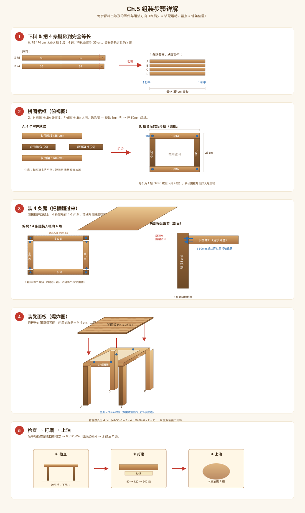

Ch.5 组装步骤
5 步走完：下料 → 拼框 → 装腿 → 装板 → 打磨上油

图 5.1 · 5 步装配示意
Step 1 · 下料 & 找平
按 Ch.3 的方案切出 4 腿 + 2 长围裙 + 2 短围裙。把 4 条腿叠在一起，两端用砂纸找平到完全等长（35 cm）。
4 腿等长直接决定板凳稳定性。这一步不能省。
Step 2 · 拼围裙框
G、H 短围裙嵌在 E、F 长围裙之间，形成内部 36 × 20 cm 的矩形框：
- 在 E 的两端内侧、H 的两端内侧涂木工胶
- 用 3 mm 钻头预钻孔
- 从外侧打入 4 颗 50 mm 螺丝（每个角 1 颗，先不全紧）
- 角尺检查四角 90°，再全部拧紧
Step 3 · 装腿
把围裙框翻过来（开口朝上），4 条腿插入 4 个内角：
- 腿顶端与围裙顶面 齐平
- 涂胶 → 预钻孔 → 从围裙外侧打入螺丝（每条腿 2 颗，一颗来自长围裙方向，一颗来自短围裙方向）
- 翻过来站在平地上，目测是否四脚平稳。不平就用砂纸把高的那条腿底部磨低。
Step 4 · 装凳面板
把板放在围裙框顶面上：
- 板四周各悬出 4 cm（44 − 36 = 8，÷2 = 4；28 − 20 = 8，÷2 = 4），左右前后对称
- 从围裙顶面（即板的反面）向上打 8 颗 30 mm 螺丝
- 不要先打太紧，全部上好后再依次拧紧
Step 5 · 检查 → 打磨 → 上油
- 放在平地上检查稳定性，必要时砂腿
- 80 目 → 120 目 → 240 目逐级砂光所有表面，特别是边角倒圆
- 涂木蜡油或清漆，干透后再涂第二遍
通用原则：每个接合面都遵循"涂胶 → 预钻 3 mm 孔 → 拧螺丝 → 角尺检查"四步。